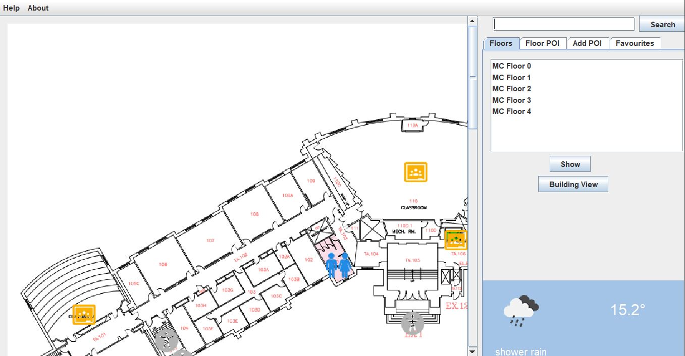
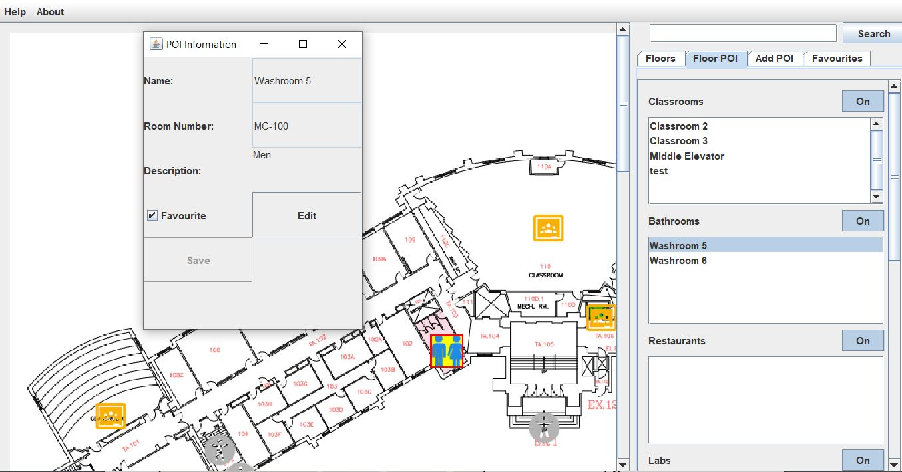
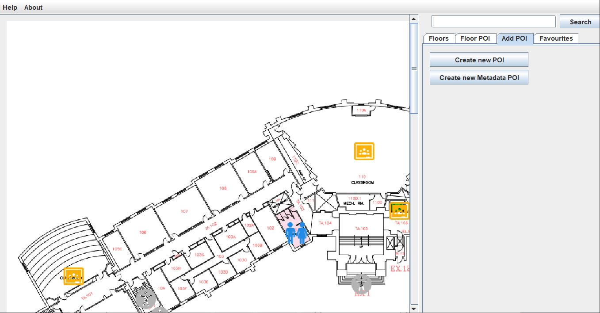

Options:
Login ScreenBuilding Selection
Primary Floor Navigation Page
Floor POIs View
Modify POIs tab: Standard User
Modify POIs tab: Developer Editing Mode
Favourites Tab
Search Bar
From this screen, a user can enter the Campus Navigation app by providing a username and passcode. Once a user enters a username and passcode that match a set of user identities will give them access to the application.
Once a valid user identification is entered, the user will be brought to this screen. From here, the user can select whichever building they want to navigate from a provided selection. From this screen onward, the user will also have access to the '?' and 'i' icons, which will provide the user with the User Help Menu and an information menu about the application and its development, respectively.

Upon selecting a building to view, the user will be initially directed to a view of the 'main' floor of that building. From here, the user will see the main floor
view interface that will remain throughout navigation around the application.
This floor view interface will include a search bar to search for POIs around the buildings and will display the current weather in London. This view also
includes a bar for zooming in or out of the map, and will allow the user to scroll vertically or horizontally if the current size of the map allows for such.
There are various tabs ("Floors", "Floor POIs", "Create POIs" and "Favourites") that will display different aspects and allow different functionality to the
users, while still allowing for a view of the current floor.
From this window, the user can choose any floor on the current building and will be provided with a view of whichever floor they select.
Upon selecting the "Floor POIs" tab, the user will be presented with a list of the current POIs available on the current floor. Within this screen, the user will
have the option to select or deselect any type of POI and will have the list of those POI types shown or removed based on their selection. The POIs
selected within this screen will remain shown on the map as the user navigates around the floor (unless they select the "Favourites" tab, as shown later).
Upon clicking either a POI name from the list on the right or some POI icon on the map, the following interface will be provided to the user:

This view of a POI also includes the star icon to allow the user to select or deselect a highlighted POI as a favourite.
Within the 'Modify POIs' tab, the user will be provided with a list of the POIs they are able to edit/remove, but will still see all the POIs whose layers were
selected to be shown. For a standard user, the list of POIs here will only be those made by the user.
Upon selecting a POI in this mode, an edit button as well as a delete button will be provided in order to modify existing user POIs
If the user clicks the "Create New POI" button, they will be able to insert a new user POI anywhere on the map, and will be asked to provide any relevant
information about the POI before finalizing it using the save button or undoing its creation using the delete button.

If the current user's username and password matched one of an application developer mode, the Modify POIs tab will allow modification of all types of
POIs, including metadata ones.
Selecting any POI from the ones listed will allow the developer to edit its attributes or remove it entirely
After clicking on the 'Create New POI' button, the developer will select the location in which they would like to add a POI, choose what the type of POI is to
be and then add in any relevant information about the POI before either saving it or cancelling its creation.
The final tab provided in the floor view UI is the "Favourites" tab, which allows the user to exclusively see whichever POIs they have selected as a
favourite. This will give the user's favourite POIs priority and make them stand out beyond the rest of the floor POIs.
The search bar is used by inputting the exact room number to find specific POIs and when entered it will navigate you to the designated POI.